A production-grade design system for AI applications and multi-tenant SaaS
Design tokens and 74 accessible React components, with light and dark themes and two densities. Every app built on it looks and behaves the same, whether a person or an AI agent wrote the screen, and its AI features (a contextual assistant with grounded answers) look and behave like the rest of the app.
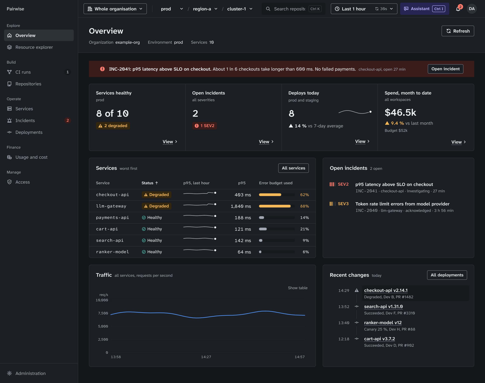
A complete app, built only from the package
Overview
The whole estate at a glance: one open incident stands out, healthy services stay quiet.
Open in the live demo
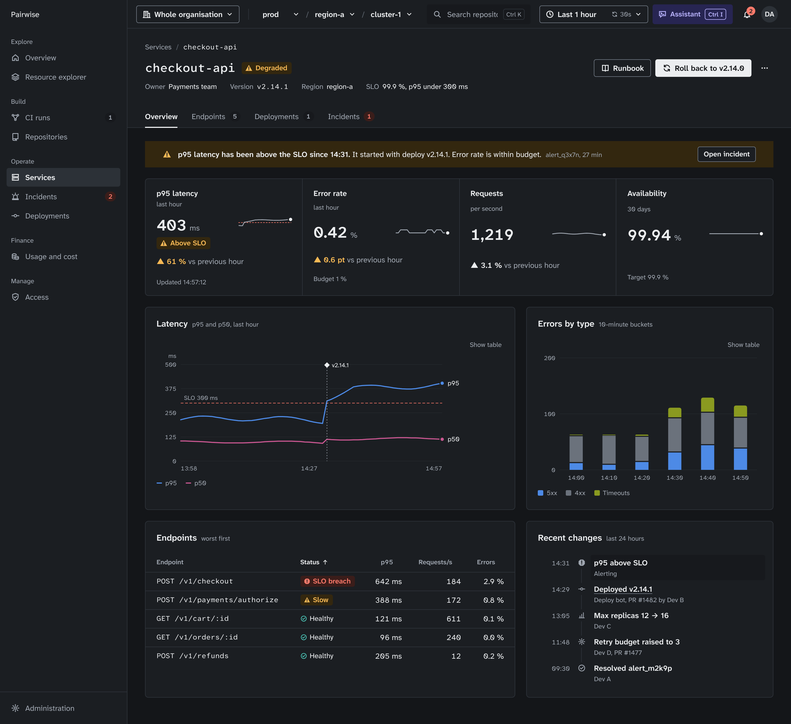
Service health Observability: metrics with context, latency against the SLO, errors by type, endpoints worst first. Updates live. Open in the live demo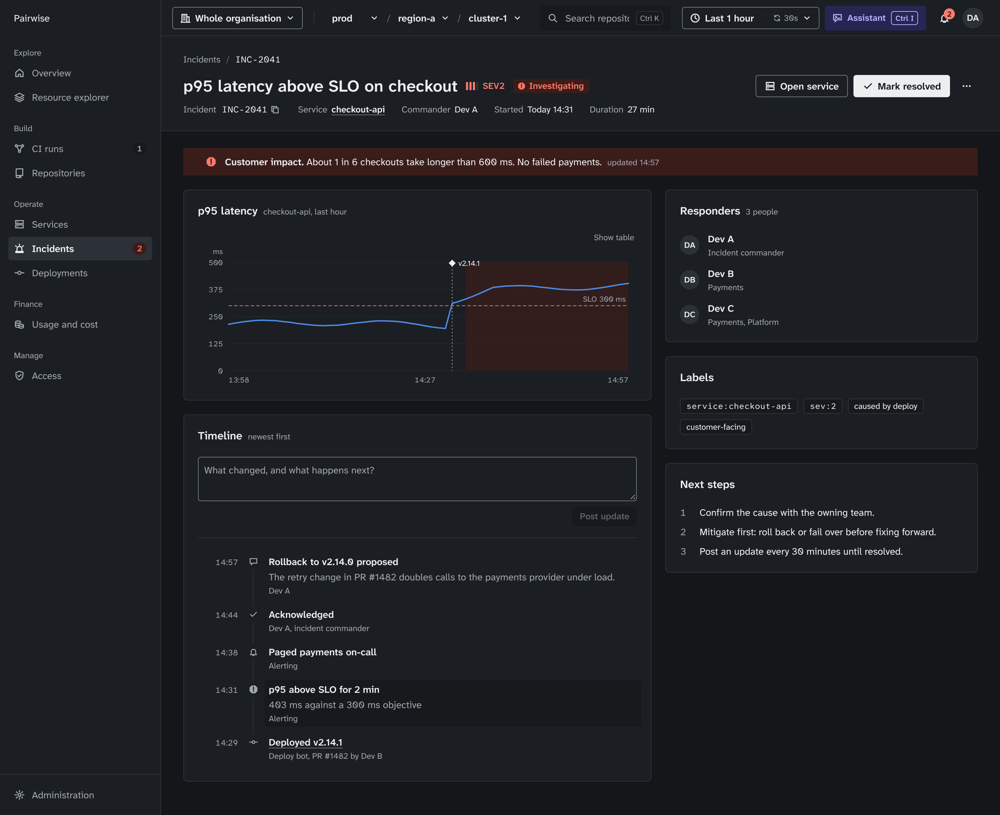
Incident Severity, customer impact, the latency regression marked on the chart, responders and a live timeline. Open in the live demo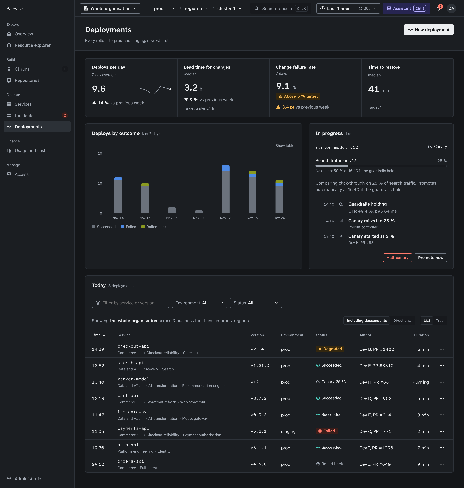
Deployments Delivery metrics, deploys by outcome, a canary in progress, and every rollout with a rollback one click away. Open in the live demo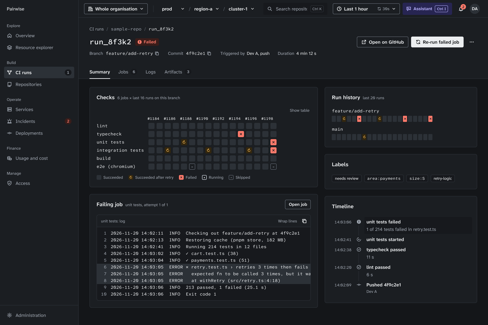
CI run detail Developer platform: a checks matrix shows new versus flaky failures, the failing log, run history and steps. Open in the live demo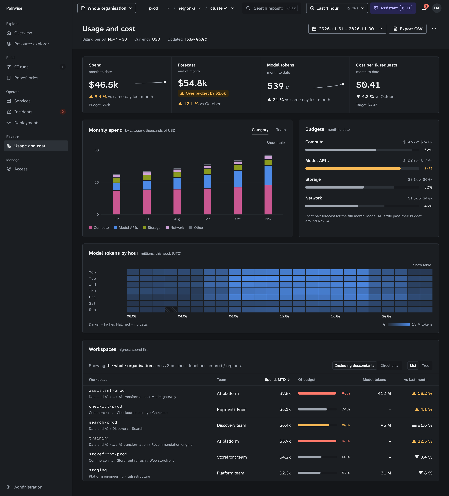
Usage and cost Spend against budget, cost by category or team, model tokens by hour, and workspaces near their limit. Open in the live demo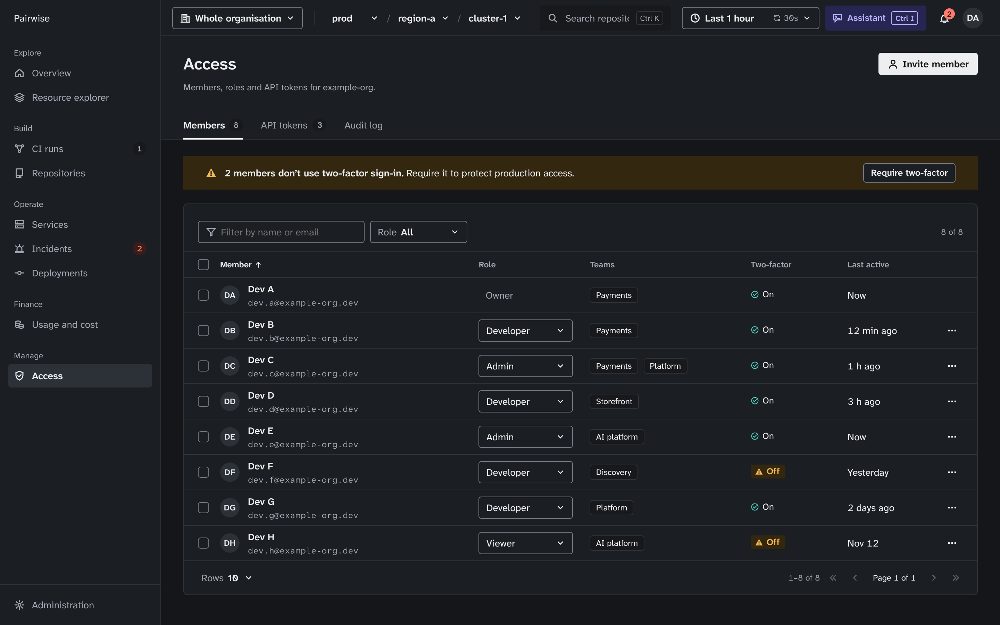
Access Members with inline role changes, an invite form with validation, API tokens and the audit log. Open in the live demo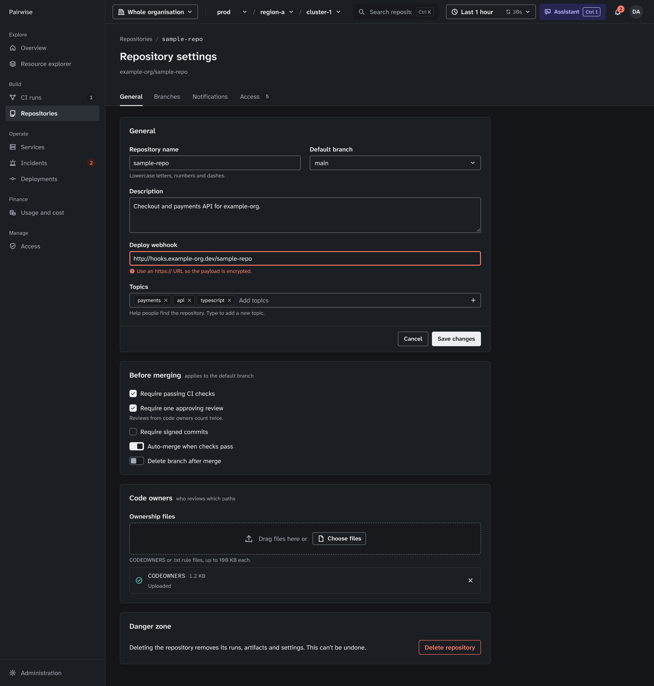
Repository settings Everyday SaaS: validation that says how to fix it, toggles, toasts, and a type-to-confirm delete. Open in the live demo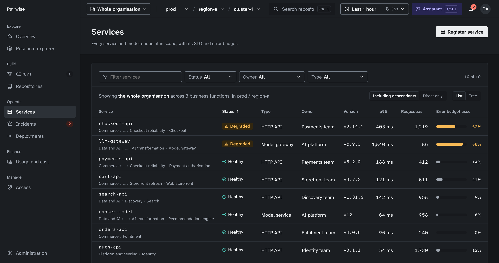
Services A filterable, sortable list of services with status and error budget, worst first. Open in the live demoAn assistant that reads as part of the app
It sees the page and scope you're in and shows that context. Answers lead with the conclusion, then rows to look at, the key figures and one next step, with citations and sources. It can't change anything. Press Ctrl+I in the demo; its answers are scripted, with no model calls.
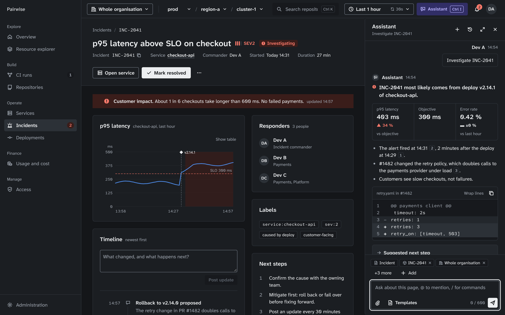
Responsive down to a phone
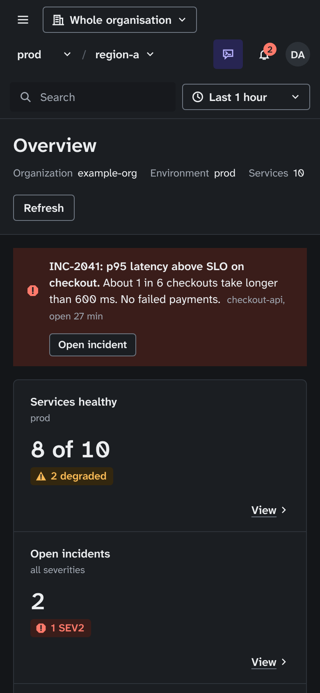
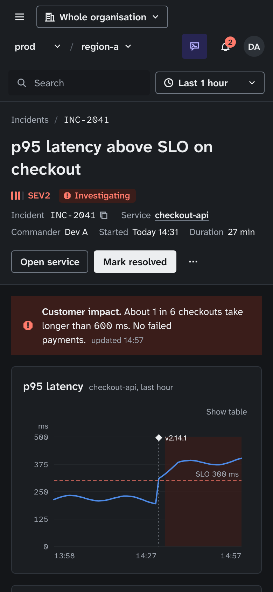
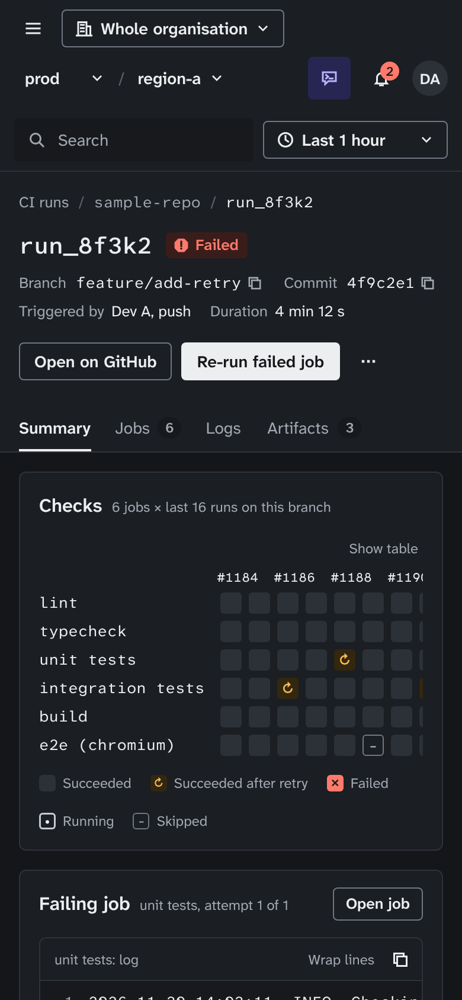
How it stays consistent
- One source of truthEvery colour, space and type style lives in tokens.json, generated into CSS variables and typed names.
- Signal, not decorationNeutral chrome. Critical is the only colour that asks for action. Status is always icon, label and colour.
- Accessible by testContrast floors and a colour-blind-safe chart palette are unit tests. Radix provides focus and keyboard behaviour.
- Typed end to endStrict TypeScript with zero any. Tables infer your row type; type tests run against the built package.
- Refactors proven pixel-identicalEvery component is screenshotted in both themes and densities and diffed before a change merges.
- Built for AI agentsAgents in every project read one generated COMPONENTS.md and use the system instead of inventing UI.
- AI inside the apps, tooAssistant panel, messages, composer and context bar, built from the same parts. The app brings its own model.